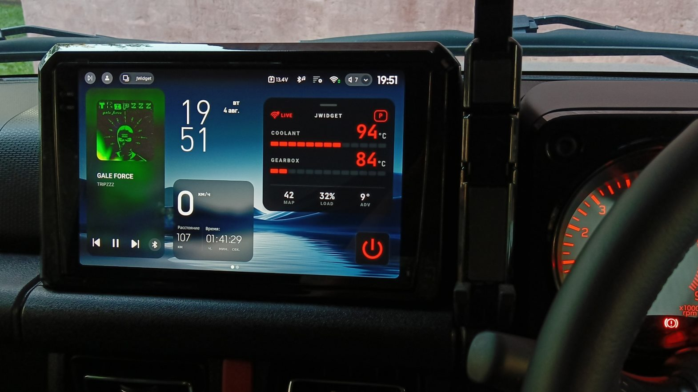
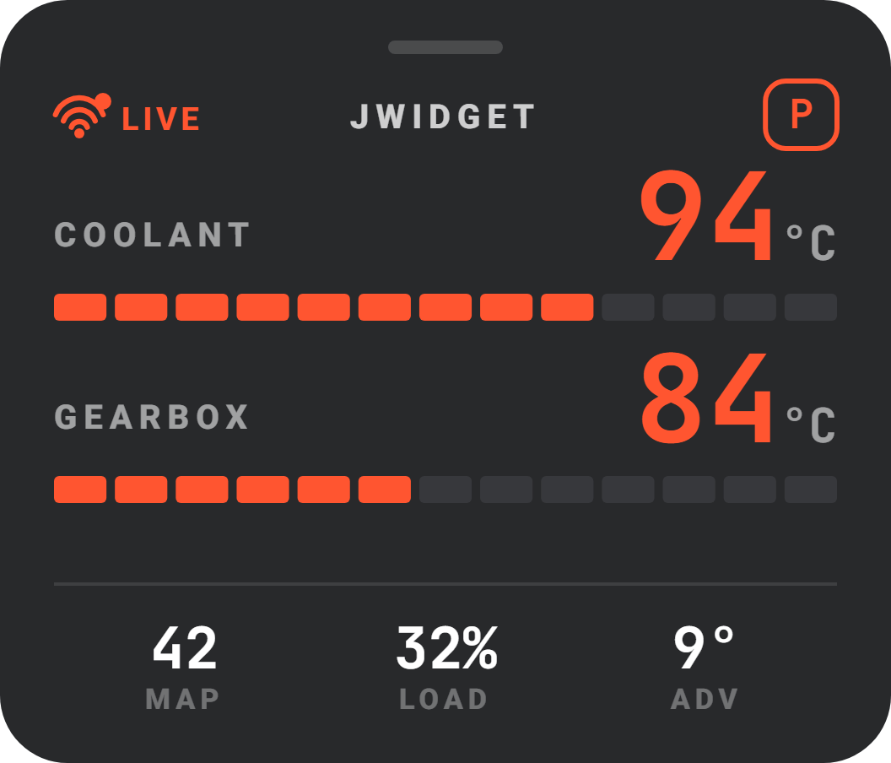
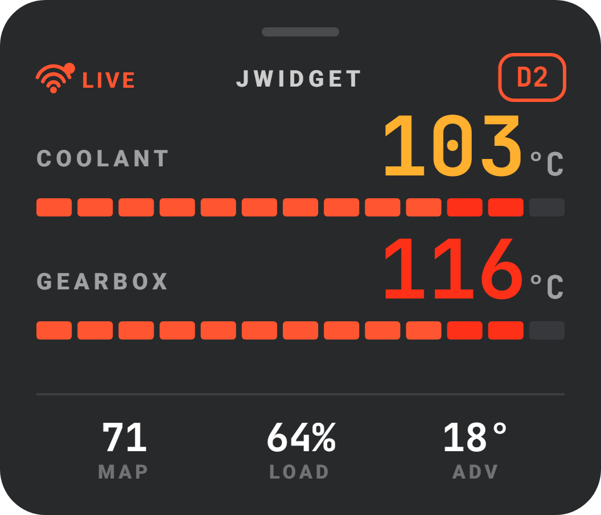
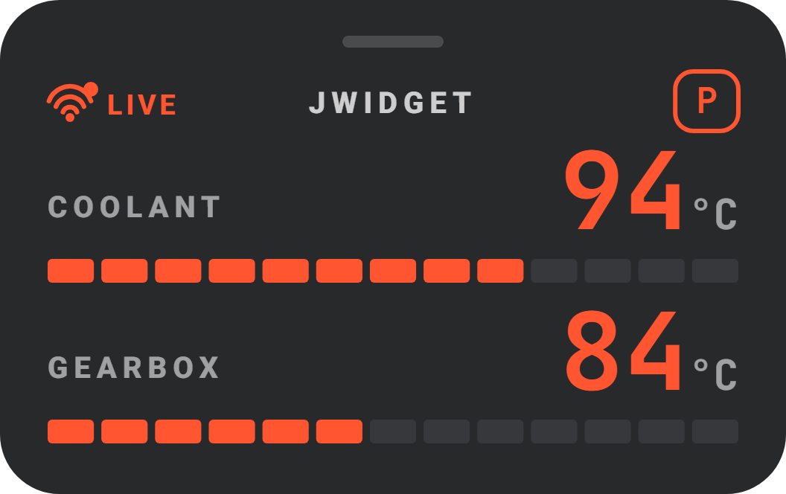
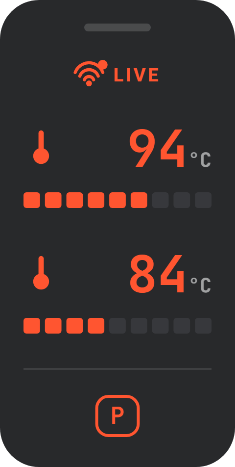
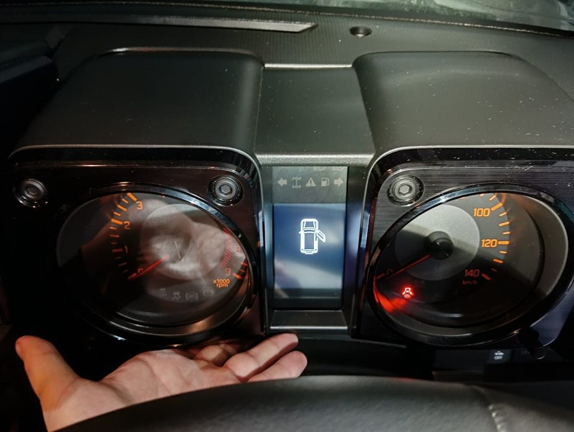
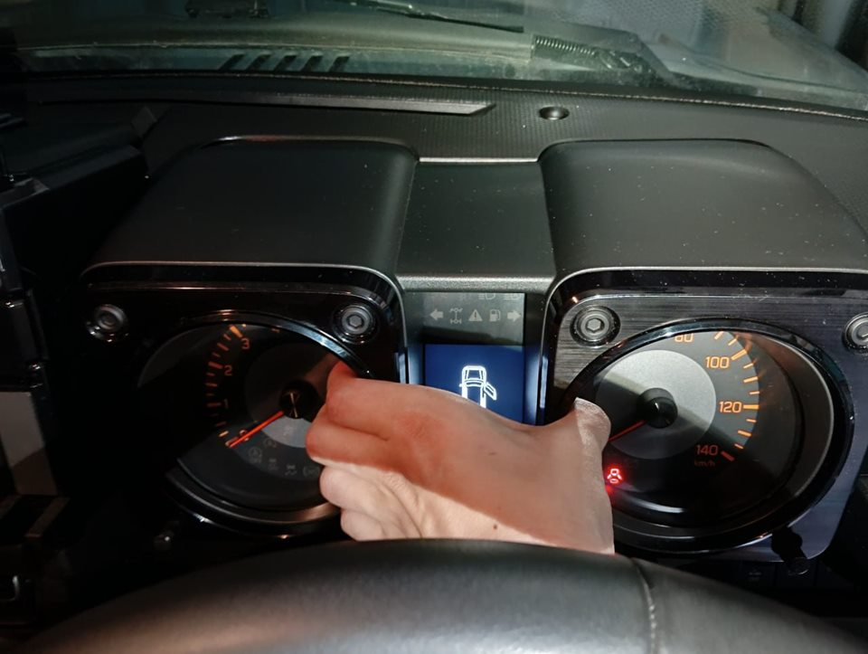
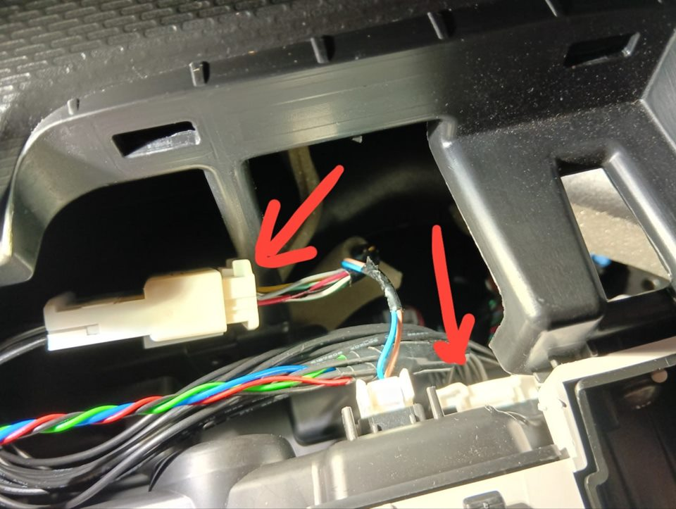
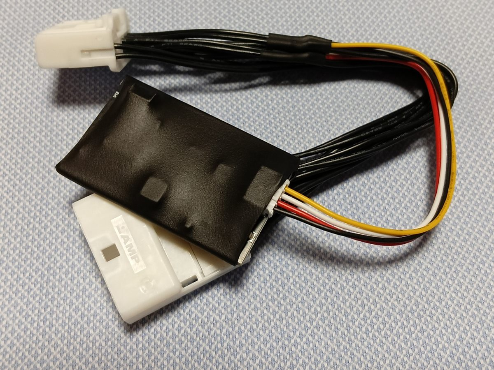

Дорестайлинг
АКПП
23показания + шины*
- Температура двигателя
- Температура АКПП, передача
- Давление в шинах*
Для Suzuki Jimny · JB64 · JB74 · JC74
JMonitor выводит на Android-магнитолу температуру двигателя и АКПП в градусах, предупреждает о перегреве и показывает ещё два десятка показаний автомобиля. Включается в разрыв штатного разъёма — без резки проводов.
Скачать обзор возможностейPDF · 2,5 МБ
Нужна Android-магнитола: Android 8.0 или новее, с Wi-Fi.

Главное
У Jimny нет указателя температуры — только лампа, когда уже поздно. С автоматом на песке или на затяжном подъёме та же история. JWidget показывает обе температуры числом и шкалой: число желтеет и краснеет по мере нагрева.
Температура АКПП и текущая передача — на автомобилях с автоматом.


Карточка
Три вида карточки. Что показывать в каждой позиции — выбираете вы.


Показания
Любое можно вывести на карточку. А экран Live parameters показывает все сразу — вместе с переключателями автомобиля.
Обороты, нагрузка, угол опережения зажигания, дроссель, педаль газа
Давление в коллекторе, атмосферное давление, наддув, температура воздуха
Текущая передача, полный привод 4WD и пониженная 4L
Давление в тормозной системе и в вакуумном усилителе
Уровень топлива, скорость автомобиля
Скорость каждого колеса, угол поворота руля
Давление в каждой шине — на дорестайлинге со штатной TPMS
Свет, поворотники, двери, ремни, ручник, кондиционер — 15 состояний
Набор показаний зависит от автомобиля — см. совместимость. Чего машина не передаёт, приложение показывает прочерком — никогда нулём.
Экран Live parameters в приложении JWidget
Как это работает
JMonitor ничего не отправляет в шину автомобиля. Ошибки не читает и не стирает.
Жгут включается в разрыв штатного разъёма. Разъём OBD остаётся свободным.
Данные по Wi-Fi зашифрованы. Без ключа с карточки их не прочитать.
Устройство засыпает, когда шина затихла, и просыпается само.
Прошивка идёт внутри приложения. Если что-то пошло не так, устройство само возвращается к прежней.
Каждое устройство — перед отправкой.
Установка
Без резки проводов и пайки. Снимается так же — автомобиль остаётся заводским.
Перед началом отсоедините аккумулятор: снимите минусовую клемму.

1Возьмитесь за нижний край козырька щитка приборов.

2Потяните на себя: он на защёлках, инструмент не нужен.

3Включите жгут в разрыв: разъём жгута — в щиток, штатный разъём — в жгут, до щелчка.
Подключите аккумулятор и включите зажигание: щиток работает как обычно, а в списке сетей Wi-Fi появилась сеть «Jimny-XXXX». Модель и коробку устройство определяет само.
Совместимость
Suzuki Jimny четвёртого поколения: JB64, JB74, JC74 — с АКПП и МКПП, дорестайлинг и рестайлинг.
Дорестайлинг
23показания + шины*
Дорестайлинг
16показаний + шины*
Рестайлинг
16показаний
Рестайлинг
14показаний
* На автомобилях со штатной системой контроля давления в шинах (TPMS). Полный список показаний по моделям — в обзоре возможностей.
Нужна Android-магнитола: Android 8.0 или новее, с Wi-Fi. Со штатной магнитолой устройство не работает.
Инструкции
PDF на русском, с картинками. Начните с общего обзора.
Что показывает, как устроено, полный список показаний по моделям.
Шаги с фотографиями: от аккумулятора до проверки.
Установка JWidget, подключение по Wi-Fi, первый запуск.
Каждый раздел и каждая настройка, с картинками экранов.

Комплект и цена
7 000 ₽Доставка — СДЭК
Приложение JWidget и обновления — бесплатно.
Подробности и заказ — в каналах:
Вопросы
Нет. Нужна магнитола на Android 8.0 или новее, с Wi-Fi.
Да, JWidget ставится и на Android-телефон. Но устройство задумано для магнитолы: карточка поверх навигации, без телефона в руках.
Нет. В разъём OBD ничего не вставляется, он остаётся свободным. JMonitor стоит за щитком приборов, и его не видно.
Нет. Оно только слушает шину и ничего в неё не отправляет. Ошибки не читает и не стирает.
Автомобиль с МКПП не передаёт температуру коробки, а рестайлинг не передаёт часть показаний двигателя. Чего машина не передаёт, приложение показывает прочерком.
Если на ней есть штатная система контроля давления (TPMS) и это дорестайлинг — да.
Устройство засыпает вместе с автомобилем, когда шина затихла.
Интерфейс приложения — на английском. Инструкции — на русском, с картинками экранов.
Нет, оно ставится из файла .apk. Файл и обновления вы получаете от автора проекта.
Устройство само вернётся к прежней прошивке и будет работать как раньше.
Да: отсоединить аккумулятор, снять козырёк, вынуть жгут, вставить штатный разъём обратно.